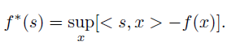
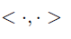
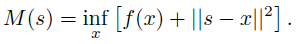
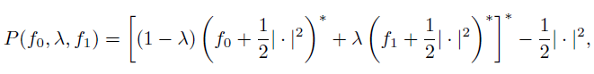
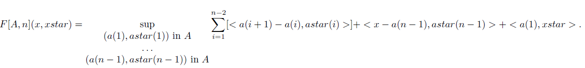
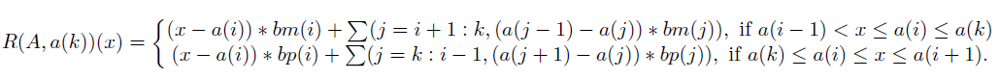

Computational Convex Analysis toolbox description
The CCA package contains numerical algorithms to compute several fundamental transforms of convex analysis for convex and nonconvex functions. Most of its algorithms take a function as input, either as evaluated on a grid or given as a black box, and return the evaluation of the transform on a grid.
Many exact transforms work with piecewise linear-quadratic functions and their subdifferentials, and visualizing these models is easy. See the main pages for PLQ functions and their subdifferentials.
The transforms currently implemented are:
The Legendre-Fenchel transform (also called Legendre-Fenchel conjugate, Fenchel conjugate, or convex conjugate):

The notation

denotes the standard scalar product. Several linear-time algorithms are implemented (functions with names lft_*).
The Moreau envelope (also called Moreau-Yosida approximate):

The notation
denotes the Euclidean norm. Several linear-time algorithms are implemented (functions with names me_*).
The proximal average transforms one convex function into another continuously:

where
is the Fenchel conjugate above.
This transform works even if the functions have only partially overlapping or completely disjoint domains. This algorithm, part of the PLQ framework, runs in O(N(f1) + N(f2)) time, where N(f) is the number of pieces in the PLQ function f.
The Fitzpatrick function of a finite operator A defined on the real line (functions with names op_fitz* and plq_fitz*):

The most efficient general algorithm implemented runs in worst-case cubic time. Other algorithms with fixed parameters are implemented that further reduce the time complexity.
The Rockafellar function of a real, finite operator A:

This algorithm uses PLQ functions to achieve a worst-case linear time complexity.
Yves Lucet, University of British Columbia, BC, Canada